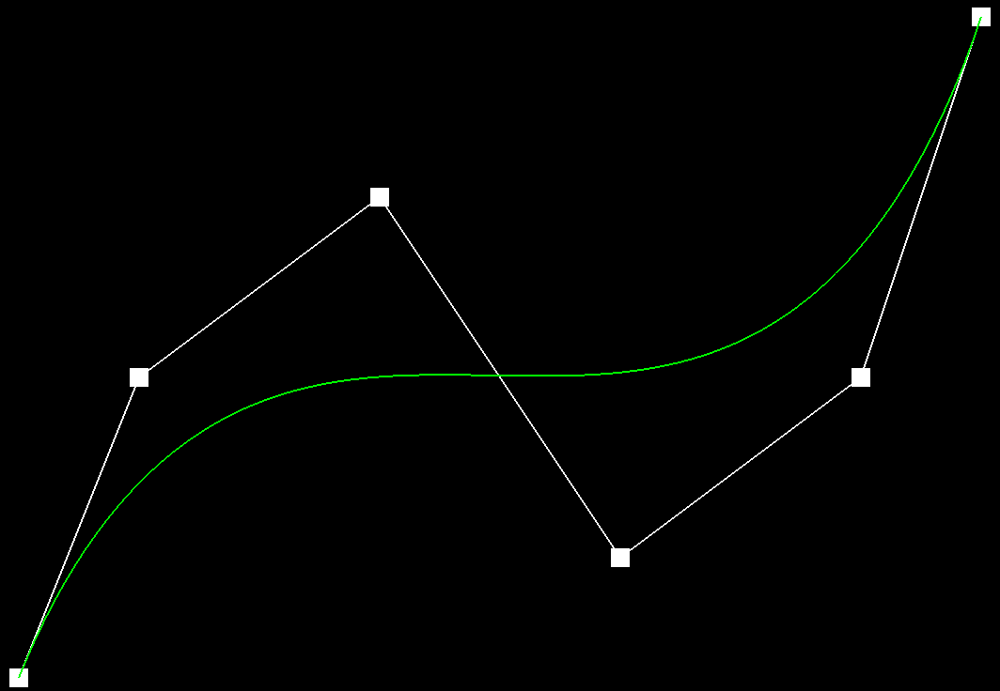
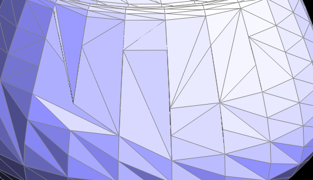

Overview
In this homework, we built Bezier curves using the "de Casteljau" algorithm discussed in lecture.
We also worked on implementing various operations that would allow us to manipulate triangle meshes and these operations
included:
-
Edge flipping
-
Edge splitting
-
Mesh unsampling via loop subdivision
Some interesting things I got out from this homework include:
-
Cementing my knowledge on bezier curves and surfaces.
-
Seeing the "big picture" as in how all of these operations we implement below allow for triangle mesh
manipulation and mesh traversal.
Section I: Bezier Curves and Surfaces
Part 1: Bezier Curves with 1D de Casteljau Subdivision
Briefly explain de Casteljau's algorithm and how you implemented it in order to evaluate Bezier curves.
In a nutshell, de Casteljau's algorithm allows us to linearly interpolate n control points at the current subdivision level
with a given t value to find the (n - 1) control points at the next subdivision level. In my implementation, I went about this
by first creating an additional "lerp" helper method under the BezierCurve class that would be responsible for computing the linear
interpolation given two points and a value t. Inside my "evaluateStep" function, I then performed one step of the recursive process
by iterating through all the possible points, up to the second to last point, and calling the "lerp" helper method using appropriate
arguments as specified and then appending these new interpolated points to a new vector instance containing the interpolated points for the
next subdivision level. After all the iterations have completed, then I'd simply return this new vector instance which represents
the linearly interpolated points for the next subdivision level.
Below are screenshots of my Bezier curve with 6 control points that demonstrate each step of the de Casteljau algorithm until
reaching the final point. The completed Bezier curve is also featured in green as well.
|

Level 0
|
Level 1
|
|
Level 2
|
Level 3
|
|
Level 4
|
Level 5
|
Below is a screenshot of a slight variation of my Bezier curve that features moving the control points around and modifying t.
|
Bezier curve with different t value and translated points
|
Part 2: Bezier Surfaces with Separable 1D de Casteljau
Briefly explain how de Casteljau algorithm extends to Bezier surfaces and how you implemented it in order to evaluate Bezier surfaces.
The de Casteljau algorithm extends to Bezier surfaces by mapping the 1D algorithm to a series of n x n control points and applying
it along both the u and v directions. We do this by first treating each row of control points as a Bezier curve and applying the
1D de Casteljau algorithm to each row to get a final point corresponding to u and varying along the v direction. Finally, we treat
this new set of interpolated control points, for a fixed u but varying along v, as a Bezier curve and apply the 1D algorithm again
for a given v, to arrive at a final, single point along the Bezier curve corresponding to our parameters (u, v). In my implementation,
this is the approach I followed as I iterated through every row of our n x n grid, treating each row as a Bezier curve and for each row:
-
I performed the 1D de Casteljau algorithm to retrieve a single point for a fixed parameter u
After getting a new set of control points that corresponds to one point per row for a fixed parameter u varying along v , I then treated this as an
additional Bezier curve and applied one more iteration of the 1D de Casteljau algorithm for a fixed parameter v, to arrive at a final
point along this curve corresponding to a fixed (u, v) parameter pair.
|
Teapot rendering using Bezier surfaces
|
Section II: Triangle Meshes and Half-Edge Data Structure
Part 3: Area-Weighted Vertex Normals
Briefly explain how you implemented the area-weighted vertex normals.
In my implementation, I modeled my code based off the printNeighbourPositions function shown in the primer that was linked in our
homework spec. Using this as a starting framework, I created an empty Vector3D instance to keep track of our sum of area weighted normals
then I iterated through all the neighboring vertices of a given vertex and for every iteration:
-
I would isolate the two nearest vertices given a vertex and extracted their positions as instances of a Vertex3D object.
-
Using these positions, I went ahead and calculated the area of encompassed by the lines connecting these three Vector3D positions
and for this I did the following:
-
I got the difference of two Vector3D objects
-
I then calculated the cross product of these resulting two vectors to get a third vector perpendicular to the plane where
all three Vector3D positions lie
-
I calculated the magnitude of this resulting cross product vector that would give us the area of a parallelogram
-
Finally, I divided this area by 2 since a parallelogram is made up of 2 triangles and this would be the area of the triangle
formed by the three Vector3D positions
-
I then got the normal vector corresponding to the face of the current vertex
-
I calculated the weighted area by multiplying the area by the normal vector and added the result onto our vector that kept track
of the sum of area weighted normals
-
Lastly, I called the unit() method on the resulting vector after this process was complete and this would be the normalized
sum of all area weighted normals that my function would return.
|
Rendering of teapot using flat shading
|
Rendering of teapot using phong shading
|
Part 4: Edge Flip
Briefly explain how you implemented the edge flip operation and describe any interesting implementation / debugging tricks you have used.
My implementation of edge flipping first began by drawing out the diagram for the two triangle half-edge data
structure that was discussed in lecture and I labeled any and all edges, half-edges, vertices, and faces
pertaining to this structure with appropriate variable names to be able to distinguish
them from one another. Before any flipping actually took place within my code, I went through and first checked
if any of the two faces in our structure lie on a boundary and if this was not the case, then we would be able to
proceed with the rest of the process. After doing this check, I then "flipped" the edge in my diagram and then reassigned
all the half-edges, edges, vertices, and faces as needed to account for this flipping operation. After completing this process
for a handwritten diagram, I simply translated it to code and made sure to account for all the half-edges, edges, vertices, and faces
present. The one slight bug I encountered in my code included incorrectly identifying the wrong twin for my "h0" half-edge
at the time of reassignment and this caused issues where sometimes a gaping hole would appear in my teapot
after more than 3 flips to a single edge.
|
Rendering of teapot with 1 edge flip!
|
Zoomed in picture of teapot with 1 edge flip!
|
|
Rendering of teapot with multiple edge flip!
|
Zoomed in picture of teapot with multiple edge flips!
|
|
Rendering of teapot with even more edge flips!
|

Zoomed in picture of teapot with even more edge flips!
|
Part 5: Edge Split
Briefly explain how you implemented the edge split operation and describe any interesting implementation / debugging tricks you have used.
Similar to edge flip, I drew a diagram for the two triangle half-edge data structure discussed in lecture and I labeled all the edges, half-edges,
verticies, and faces that were present. Then I went through and split the edge by adding a vertex in the middle of this structure and made sure to add all the
new edges, half-edges that came along with the placement of this new vertex. I made sure to be consistent with my numbering scheme as error in this step would cascade
to weird bugs down the line. Once I was able to solidify my conceptual understanding of what needed to be done, I went ahead and coded it up.
I first began by checking if we were on an edge boundary and if this was NOT the case, then I could proceed with splitting the edge and doing all my pointer
reassignments based on the diagram I had drawn out. One bug I encountered was that I had incorrectly set the vertex of my halfedge so when I tried testing
my implementation with the teapot, I ended up with a hole in my teapot after 1 split, but thankfully I was able to catch onto my mistake rather quickly
by combing through my code and checking all my reassignment statements!
|
Teapot with no edge splitting!
|
Teapot with edge splitting!
|
 Zoomed in image of teapot with edge splitting!
Zoomed in image of teapot with edge splitting!
|
|
Teapot with no edge splitting or edge flipping!
|
Teapot with edge splitting and edge flipping!
|
|
Zoomed in image of teapot with edge splitting and edge flipping!
|
Part 6: Loop Subdivision for Mesh Upsampling
Briefly explain how you implemented the loop subdivision and describe any interesting implementation / debugging tricks you have used.
In my implementation, I did my best to adhere to the comments featured under the "upsample" method in student_code.cpp. This included first
going through all the vertices and updating their old positions and reflecting this change under the "newPosition" field of the
Vertex class for every vertex. The next step in this process included going through all the edges and computing the updated vertex
positions with respect to the given edge for evert single edge. It was during this second step where I also made a new instance
of a std::vector of EdgeIter types and I appended every edge visited to this vector. This was essential for the next part of this function as the next part involved
iterating ONLY through our original edges edges. I decided to go this route after running into an infinite loop as a result of splitting the edges of
the object infinitely many times. The third step in my implementation included iterating through this vector containing all our original edges
and splitting the given edge using our splitEdge function from Task 5. I also made sure to update the new position of this vector to reflect the
new position that was associated with the edge that was just split. The fourth step in this process included going through all the new edges and flipping
and and all edges that new and that connected an old and new vertex and so I just made sure to include if cases to flip the edge IF AND ONLY IF these conditions
were met. The fifth and final step in my implementation just made sure to copy all the vertex positions into the appropriate "position"
field of the vertex on the current iteration.
 Supersampling 0 times, no pre-processing!
Supersampling 0 times, no pre-processing!
|
 Supersampling 1 time, no pre-processing!
Supersampling 1 time, no pre-processing!
|
 Supersampling 2 times, no pre-processing!
Supersampling 2 times, no pre-processing!
|
 Supersampling 3 time, no pre-processing!
Supersampling 3 time, no pre-processing!
|
 Supersampling 4 times, no pre-processing
Supersampling 4 times, no pre-processing
|
Take some notes, as well as some screenshots, of your observations on how meshes behave after loop subdivision. What happens to sharp corners and edges? Can you reduce this effect by pre-splitting some edges?
Based on the above images, meshes become noticeably smoother the more you upsample and this is especially true when it comes to sharp corners and edges.
This falls in line with what I expect as the essence behind upsampling involves creating new vertices by averaging out our old vertices thus "smoothing" out the
rendered object. One thing I also noticed as well as I was toggling with the upsampling level was that eventually we hit a point where our
rendering performance takes a hit and this is because the density of our mesh increases as we upsample more or more and this presents an interesting dilemma
where you have to find the ideal balance between performance vs smoothness of our object. As can be seen below as well, we can certainly reduce this "smoothing" effect
by pre-splitting some edges and this is because by pre-splitting edges, you will be creating additional vertices in this area which will then increase the mesh
density locally thus reducing the amount of smoothing that occurs in this vicinity at the time of upsampling.
 Supersampling 0 times, splitting corner edge multiple times!
Supersampling 0 times, splitting corner edge multiple times!
|
 Supersampling 1 time1, splitting corner edge multiple times!
Supersampling 1 time1, splitting corner edge multiple times!
|
 Supersampling 2 times, splitting corner edge multiple times!
Supersampling 2 times, splitting corner edge multiple times!
|
 Supersampling 3 times, splitting corner edge multiple times!
Supersampling 3 times, splitting corner edge multiple times!
|
 Supersampling 4 times, splitting corner edge multiple times!
Supersampling 4 times, splitting corner edge multiple times!
|
Load dae/cube.dae. Perform several iterations of loop subdivision on the cube. Notice that the cube becomes slightly asymmetric after repeated subdivisions. Can you pre-process the cube with edge flips and splits so that the cube subdivides symmetrically? Document these effects and explain why they occur. Also explain how your pre-processing helps alleviate the effects.
It is certainly possible to pre-process the cube with edge flips and splits such that it divides more symmetrically! In my case, I pre-split edges such that there were now
four triangular faces on each original face of the cube. This symmetrical effect occurs because by pre-splitting before upsampling, we are making the distribution of vertices
along each face more evenly distributed and as a result making the mesh uniform before upsampling. In my case, I edge split to get 4 triangular faces on each original face along with a vertex
in the middle, whereas before each face only had 4 verticies with 1 edge cutting it diagonally (resulting in 2 triangles). The distribution of the mesh was a lot more uniform in the former
and the results are clearly visible as our cube looks more cube-like when doing our loop subdivisions and the results of this are shown below.
 Supersampling 0 times, making 4 triangular faces along each side of cube!
Supersampling 0 times, making 4 triangular faces along each side of cube!
|
 Supersampling 1 time, making 4 triangular faces along each side of cube!
Supersampling 1 time, making 4 triangular faces along each side of cube!
|
 Supersampling 2 times, making 4 triangular faces along each side of cube!
Supersampling 2 times, making 4 triangular faces along each side of cube!
|
 Supersampling 3 times, making 4 triangular faces along each side of cube!
Supersampling 3 times, making 4 triangular faces along each side of cube!
|
 Supersampling 4 times, making 4 triangular faces along each side of cube!
Supersampling 4 times, making 4 triangular faces along each side of cube!
|